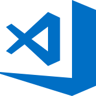

<!doctype html>
<html>
	<head>
		<meta charset="utf-8">
		<meta name="viewport" content="width=device-width, initial-scale=1.0, maximum-scale=1.0, user-scalable=no">

		<title>C9</title>

		<link rel="stylesheet" href="css/reveal.css">
		<link rel="stylesheet" href="css/theme/white.css">

		<!-- Theme used for syntax highlighting of code -->
		<link rel="stylesheet" href="lib/css/zenburn.css">

		<!-- Printing and PDF exports -->
		<script>
			var link = document.createElement( 'link' );
			link.rel = 'stylesheet';
			link.type = 'text/css';
			link.href = window.location.search.match( /print-pdf/gi ) ? 'css/print/pdf.css' : 'css/print/paper.css';
			document.getElementsByTagName( 'head' )[0].appendChild( link );
		</script>
	</head>
	<body>
		<div class="reveal">
            <div class="slides">
                <section data-markdown
                 data-separator="^\n\n\n"
                 data-separator-vertical="^\n\n"
                 data-separator-notes="^Note:"
                 data-charset="iso-8859-15">
                    <script type="text/template">
# C9

 <!-- .element: style="border-style:hidden" -->


### Editor


텍스트 에디터이면 무엇이든 상관없다

<br>
<!-- .element: class="fragment" -->
 <!-- .element: style="border-style:hidden;float:right" -->
_우리의 메모장도 급할 때 좋음_


그래도


빠르게 개발 할 수 있고  
코드가 눈에 잘 들어오면 더 좋다

그리고 <!-- .element: class="fragment" -->

간지나면 더 좋다 <!-- .element: class="fragment" -->


#### 인기있는 웹 개발 에디터


<table>
  <tr>
    <td>Sublime Text</td>
    <td>Atom</td>
    <td>VSCode</td>
    <td>Ace</td>
  </tr>
  <tr>
    <td align="center"></td>
    <td align="center"> </td>
    <td align="center"></td>
    <td align="center"></td>
  </tr>
</table>


## VSCode <!-- .element: style="text-transform:none" -->


이제까지 사용한 에디터(코드 편집기)


HTML, CSS 문서 작성하는 데는 좋지만  <!-- .element: class="fragment" -->

Ruby와 Rails를 사용하려면  
추가로 뭔가를 깔아야 한다  <!-- .element: class="fragment" -->


## AWS Cloud9


멋사 동영상 강의에서 가르쳐 준 에디터


VSCode와 비슷하고 Ruby, Rails를 사용하기 쉽지만  <!-- .element: class="fragment" -->

돈이 든다<!-- .element: class="fragment" -->


## Cloud9 Education <!-- .element: style="text-transform:none" -->


AWS C9과 같은 에디터


원래는 무료 에디터였지만  <!-- .element: class="fragment" -->

AWS에서 C9을 인수함<!-- .element: class="fragment" -->


그래서 우리는


C9 Education 사용!


멘토링 비용으로 부담하는 에디터<!-- .element: class="fragment" -->

여러분은 그냥  
무료로 걱정없이  
사용하시면 됩니다<!-- .element: class="fragment" -->


### 회원 가입 하기


## TIP


**Emmet** 기능

한 줄씩 적고 tab을 누르자!


```html
p> 
div
```

```html
div.class-name#id-name
```

```html
div.class-name>p
```


```html
ol>li
```

```html
ol>li*3
```

```html
ol>(li>p)*3
```


```html
table>(tr>td)*3
```

```html
table>(tr>th)*3+(tr>td)*3
```


<p><code class="lang-html hljs xml" style="">ul#block_list&gt;(li&gt;table&gt;(tr.block_count&gt;th{Count}+(td[colspan=2]{$}))+(tr.block_time&gt;th{Time}+td[colspan=2]{$$$$ / $$ / $$ - $$ : $$ : $$})+(tr.block_cds&gt;(th[rowspan=2]{CDS}+td{max}+td.block_cds_max{$$$$$}))+(tr&gt;(td{min}+td.block_cds_min{$$$$$}))+(tr.block_gps&gt;(th[rowspan=2]{GPS}+td{lng}+td.block_gps_lng{$$.$$$$$}))+(tr&gt;td{lat}+td.block_gps_lat{$$.$$$$$}))*3
</code></p>


# Q & A
                </script>
            </div>
		</div>

		<script src="lib/js/head.min.js"></script>
		<script src="js/reveal.js"></script>

		<script>
			// More info about config & dependencies:
			// - https://github.com/hakimel/reveal.js#configuration
			// - https://github.com/hakimel/reveal.js#dependencies
			Reveal.initialize({
                history: true,
                mouseWheel: true,
				dependencies: [
					{ src: 'plugin/markdown/marked.js' },
					{ src: 'plugin/markdown/markdown.js' },
					{ src: 'plugin/notes/notes.js', async: true },
					{ src: 'plugin/highlight/highlight.js', async: true, callback: function() { hljs.initHighlightingOnLoad(); } }
				]
			});
		</script>
	</body>
</html>
